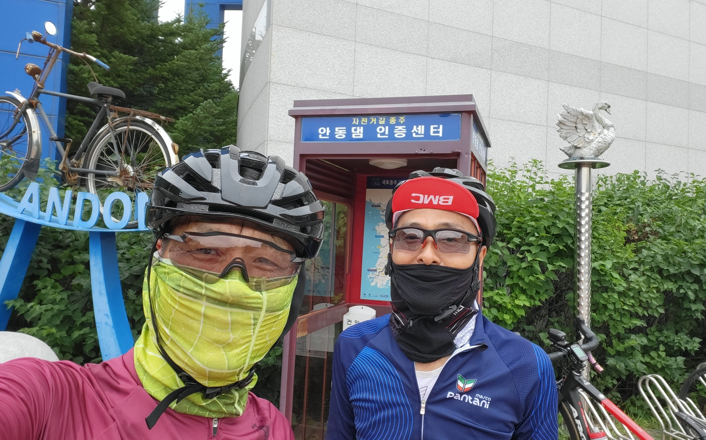
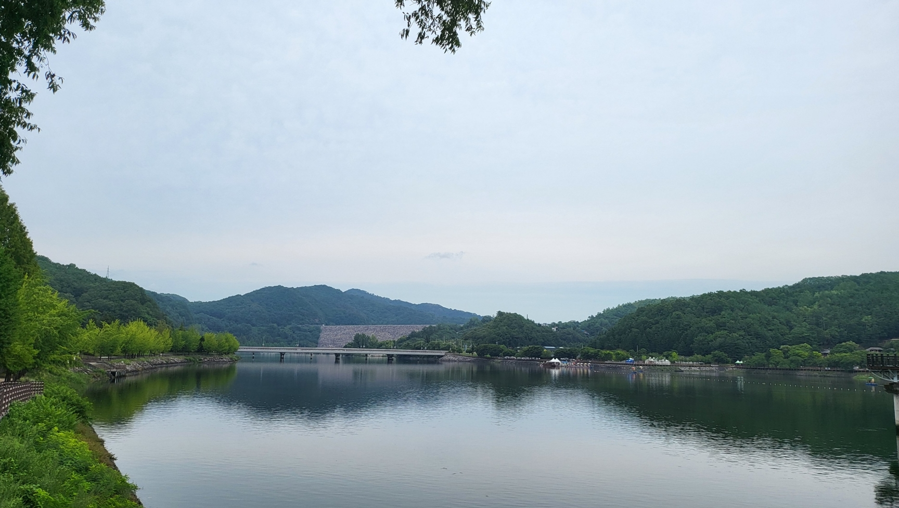
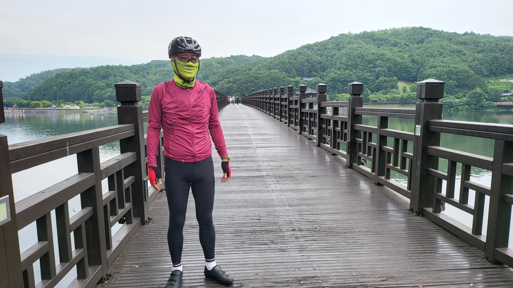
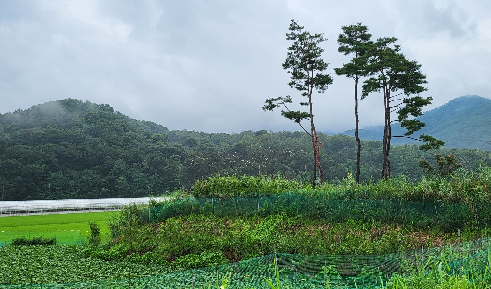
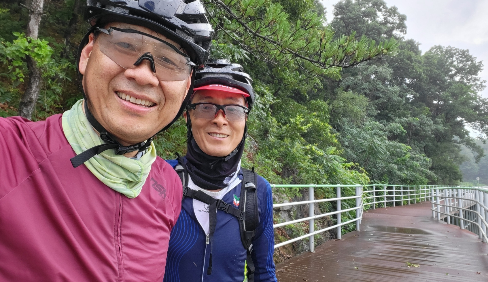
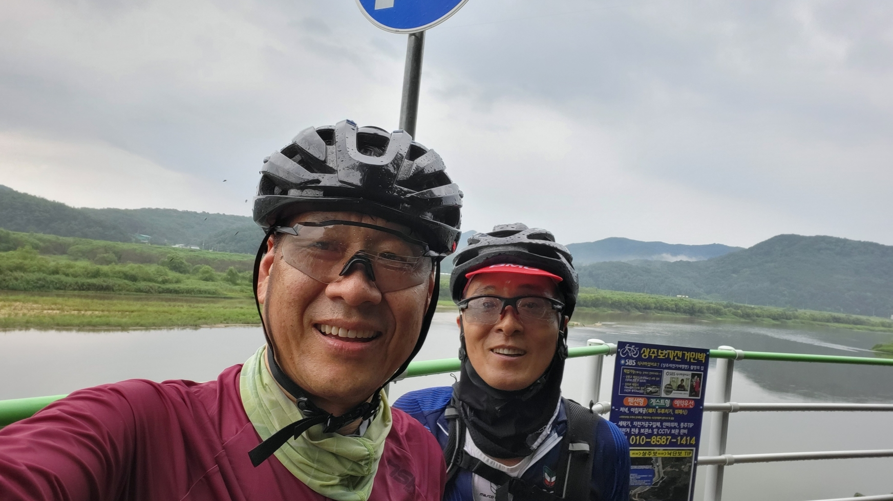
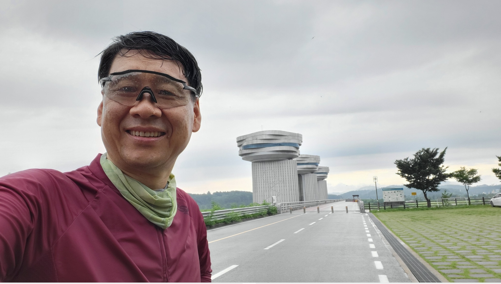
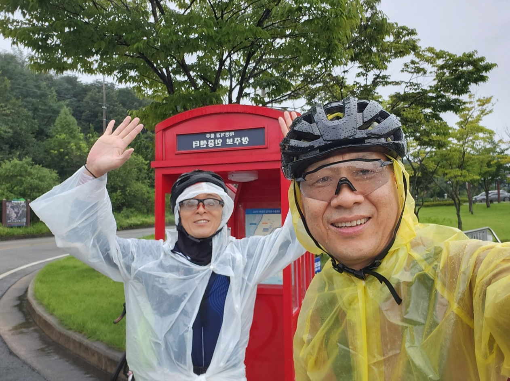

| 코스명 | 낙동강 자전거길(상류) / 안동댐-상주보 |
| 코 스 | (안동터미널) - 안동댐 - 상주보 - 상주시외버스터미널 |
| 교 통 |
가는일 : 성남종합버스터미널 - 안동터미널 오는길 : 상주종합서스터미널 - 서울고속버스터미널 |
| 거 리 | 76km (왕복 102.57km) |
| 시 간 | 4시간 40분 |
| GPX 파일 | 안동T-상주T GPX 다운로드 |
|  |  |
|  |  |
|  |  |
|  |  |
오늘은 낙동강 자전거길을 가기로 하고 시간과 거리상으로 한번에 갈수 없어 우선 안동댐에서 구미보까지 라이딩하고 구미에서 복귀하기로 계획을 세웠으나 여름더위와 비로 인하여 계획을 수정하여
안동댐에서 상주보까지만 라이딩하기로 하고 상주종합버스터미널에서 버스를 타고 복귀하기로 하였다.
버스를 타고 성남터미널을 출발하여 안동으로 향하는데 휴가철이라 차가 많아서 인지 원주까지 차가 많아 많은 시간이 소요되고 영주를 경유하여 안동터미널에 도착하였을 때는 이미 시간이 오래 지체되어
도착하자 마자 터미널 내에서 점심을 먹고 서둘렀어도 12시에나 출발 할 수 있었다.
안동터미널에서 안동댐까지 가는 길은 시작부터 공도로 업힐이 있었으나 공도 업힐만 이겨내면 안동댐까지 낙동강 강변으로 자전거 길이 잘 조성되어 그리 어렵지 않게 갈 수 있었다.
워낙 늦게 출발하여서 안동댐에서 사진 몇장만 남기고 상주보로 향했다.
안동댐에서 갔던 길을 거슬러 10킬로쯤 와서 본격적으로 상주보로 향해 라이딩 하는데 공도가 나타나고 조금 벅찬 업힐이 2번이나 나오고 생각했던 것 보다는 쉽지 않은 라이딩 길이었다.
라이딩을 한지 한 2시간쯤 되서 중간에 보급 및 쉬어가려 편의점에 들러 쉬고 있는데 갑자기 비가 내리기 시작했다.
편의점에 다시 들어가 우비를 사고 입고 우중 라이딩을 하는데 앞이 보이지 않을 정도로 세찬 빗줄기가 내리고 있었다. 1차 비가 내리고 잠잠해지는가 했더니 2차 빗줄기가 거세게 내리고 지리하게 계속 비가 내렸다.
일행은 비로 인하여 일정을 소화 하지 못할 것을 예상하고 상주보까지만 가기로 하였고 우중 라이딩을 강행하였다. 전체 라이딩 코스의 중간쯤 갈때 강가에 데크길이 나타났고 여기서 불행하게도 미끄럼 낙차사고 까지 발생하였다.
라이딩을 하면서 빗물을 머금은 데크가 이렇게 미끄럽고 위험할 줄은 ㅠㅠㅠ.
일행은 다시 출발하여 빗속을 뚫고 겨우 겨우 상주보에 도착하였으며 안동댐 이후에 76킬로 만에 상주보 인증을 하고 상주터미널로 향했다.
상주터미널에 도착하자 마자 머리부터 발끝까지 비에 흠뻑 젖어 간단한 반바지 및 티를 사 입고 겨우겨우 버스를 타고 귀가 할 수 있었다.
이번 여행을 하면서 빗속을 달리면서 이에 대한 잊지 못할 추억을 함께 공유할 수 있었으며, 빗물을 머금은 데크 자전거 길이 매우 위험하다는 것을 몸소 체험한 라이딩 이었다.